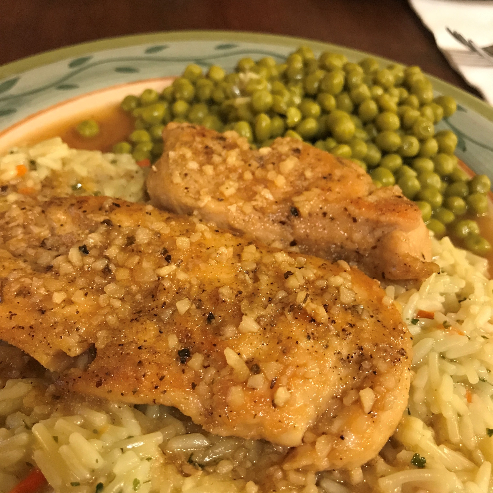

| Home | About Me | Favorite Activities | Favorite Things | Pictures |
|---|
The first thing that comes to mind when I think about my favorite things is dogs. I love every dog I see and can not wait until I graduate college to FINALLY get my own puppy.
I love everything about fall. I love how the trees change color. The temperature is always perfect, especially when the sun is out. It's not too hot or too cold. I love pumpkins and cute halloween decorations. One of my favorite things to do in fall is go pumpkin picking and carve them. Last year my boyfriend and I carved some pretty awsome pumpkins.
Some say it is because I am Italian but I love food. Some of my favorites include pizza, chips, pasta with pink vodka sauce, BBQ chicken and just about everything else. I could have dinner right after I had dinner. I am teaching myself how to cook and so far it is coming easy! I tried to make healthy foods but sometimes I just can't help it. One of my favorite recipes that I made was honey garlic chicken on a bed of rice with a side of peas. It was not too bad for a rookie.

I do enjoy staying home and watching tv. To me it is just so relaxing and cozy. Occasionally, I will watch a movie but I much rather watch one of my favorite shows. My top choices are Shark Tank, Live PD and Fixer Upper. I don't really have a favorite movie but my favorite genre is comedy.